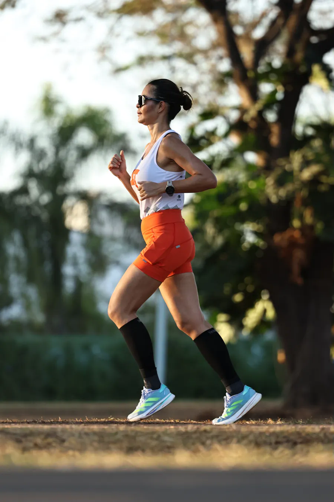
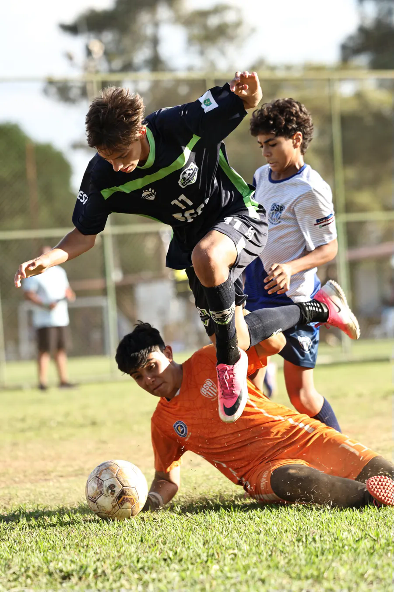
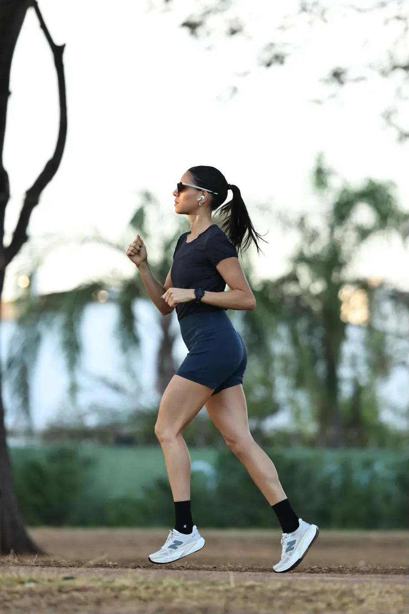
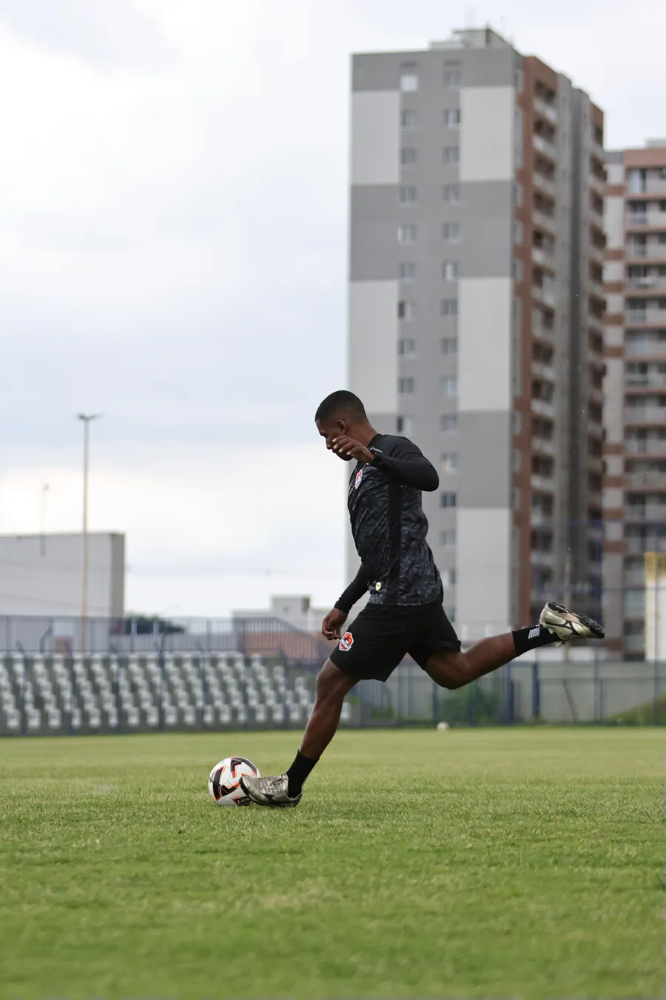
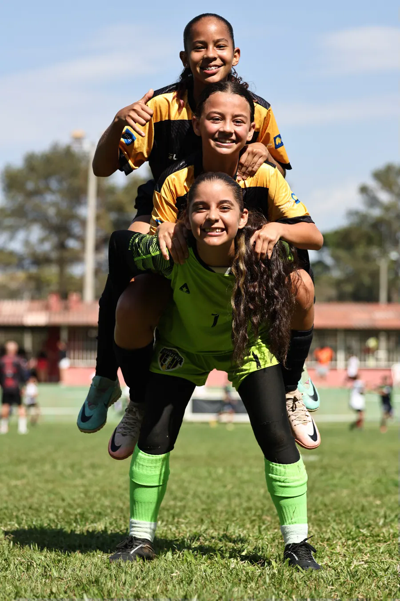
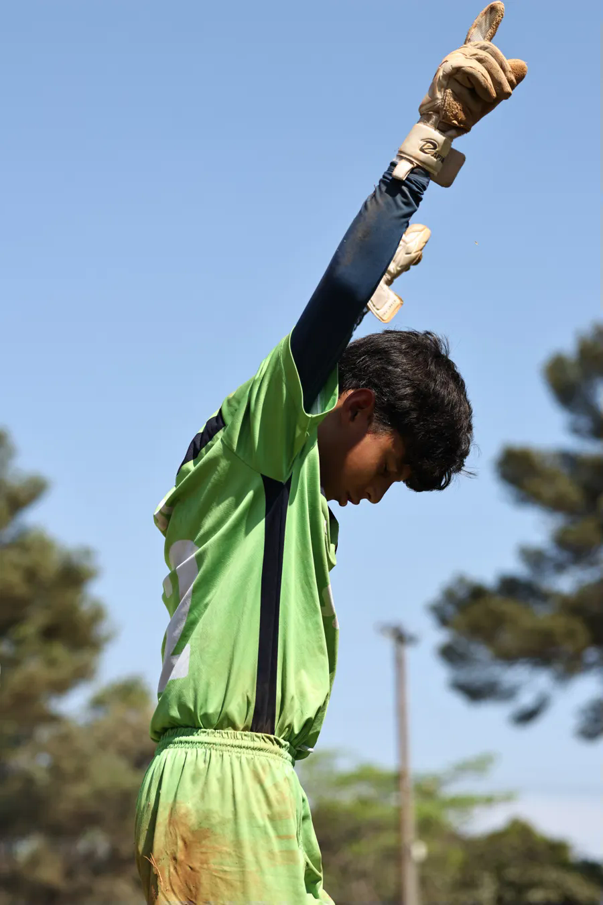

Encontre o evento
Busque pela modalidade, nome ou local.

LUCAS MARTINS · FOTOGRAFIA ESPORTIVA
Cada conquista tem uma história.
Encontre o registro da sua.
SEU PRÓXIMO CLIQUE
Escolha o evento, encontre seu momento
e leve essa conquista com você.
PRÉVIAS DE GALERIAS · NOMES E LOCAIS DOS EVENTOS A CONFIRMAR
Nenhum evento encontrado. Tente outra busca.

FUTEBOL / EM CAMPOPORTFÓLIO / LM SPORTSFOTO
O instante da superação. A intensidade de uma partida. A emoção que só quem vive o esporte conhece.
FOTOGRAFIAS / LUCAS MARTINS
Performance, emoção e movimento.
Um pouco do olhar da LM SportsFoto.




POR TRÁS DAS LENTES
Lucas Martins
LM SportsFoto
Capturando performance, emoção e movimento.
Este espaço receberá a história do Lucas, sua trajetória na fotografia e um retrato pessoal. Estamos preparando cada detalhe com a identidade dele.
Acompanhe no Instagram ↗DO EVENTO À SUA GALERIA
Busque pela modalidade, nome ou local.
Explore a galeria e selecione seus registros favoritos.
Na versão final, pague e baixe as imagens em alta resolução.
VAMOS CRIAR JUNTOS
Cobertura de eventos, treinos e projetos de vídeo de drone.
Conte um pouco sobre o que você está planejando.